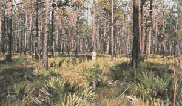
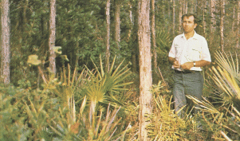
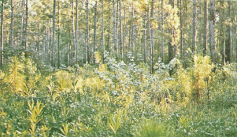

|
|
Fire Behavior Fuel Model 7 -- Southern Rough |
Anderson (1982) classifies Fire Behavior Fuel Model 7 in the Shrub Group and describes it as follows:
Fires burn through the surface and shrub strata with equal ease and can occur at higher dead fuel moisture contents because of the flammability of live foliage and other live material. Stands of shrubs are generally between 2 and 6 feet (0.6 and 1.8 m) high. Palmetto-gallberry understory-pine overstory sites are typical and low pocosins may be represented. Black spruce-shrub combinations in Alaska may also be represented.
Anderson's (1982) photographs 19, 20, and 21 are examples of fuels fitting this model.
|  | Anderson (1982) Photo 19, Fire Behavior Fuel Model 7. Southern rough with light to moderate palmetto understory. |
|  | Anderson (1982) Photo 20, Fire Behavior Fuel Model 7. Southern rough with moderate to heavy palmetto-gallberry and other species. |
|  | Anderson (1982) Photo 21, Fire Behavior Fuel Model 7. Slash pine with gallberry, bay, and other species of understory rough. |